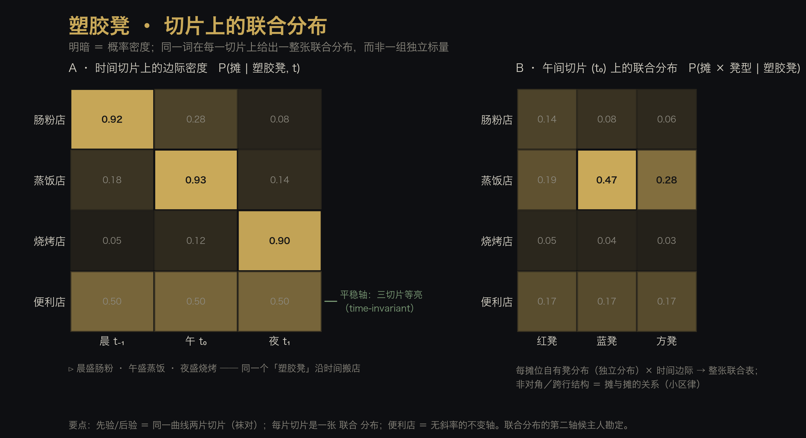
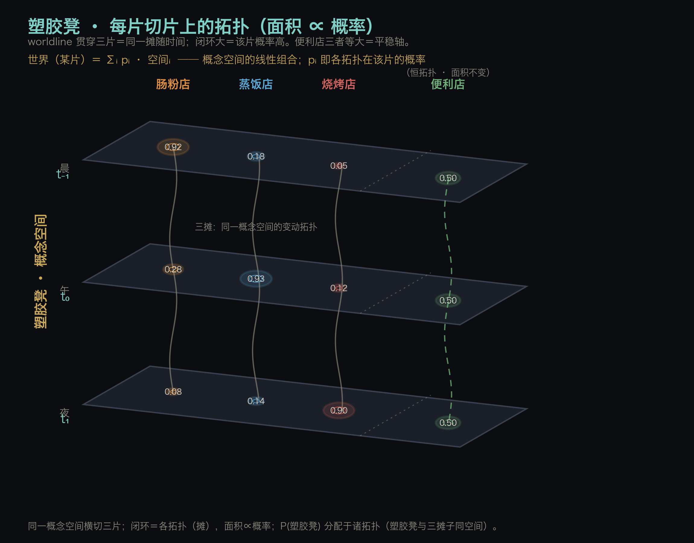
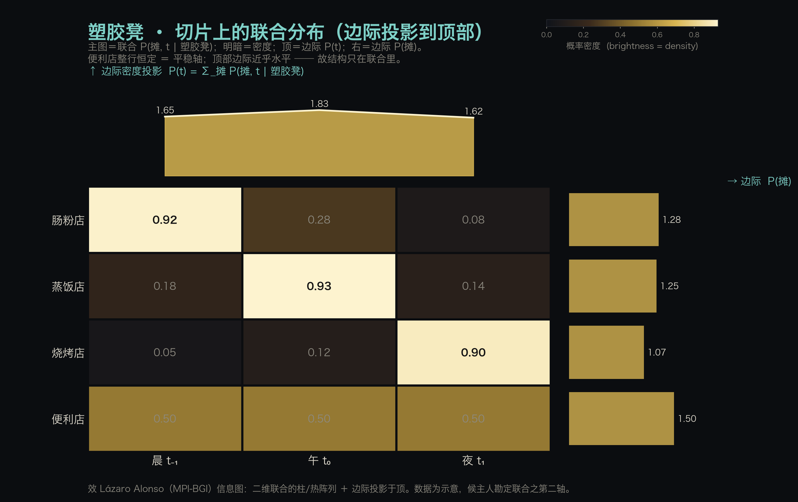

2026-10-01 · 塑胶凳：切片上的联合分布
母本：主人 1001 会话亲述（本页为草稿，候主人勘定后落账）。 缘起：承接《先验与后验是一双袜子，时间是路标》——那条「同一曲线在不同时刻的两片切片」， 今日主人给了一个日常实例，并把「切片」的内部结构点破：切片上不是一组独立标量，而是一张联合分布。 本篇对榫：《先验-后验袜对》（同空间两切片）·《冻结不可逆》（多线切片）· 小区律（维与维的关系）· MB 律。
一 · 主人原话（逐字，仅正转写）
「塑胶凳 可以看做一个曲线，例如 t₀ 定义为中午，t₋₁ 早上，t₁ 为晚上，早、中、晚， 都有三个集合（肠粉店，蒸饭店，烧烤店），用颜色明暗表示概率密度。 各个摊位有自己的塑胶凳，也用明暗表示（独立分布）。 便利店的概率密度就基本保持稳定。」
续：「塑胶凳的在某个切片上有联合概率分布。」
（正转写：肠粉点→肠粉店 · 逐渐饭→蒸饭店 · 网上→晚上 · t_0_1→t₋₁。转写毛刺非罪，按原意执行。）
二 · 模型：一条曲线 / 三切片 / 一平稳轴

同一个词「塑胶凳」沿时间搬店：明暗即概率密度 P(摊 | 塑胶凳, t)。
| 切片 | 集合 | 盛者 |
|---|---|---|
| 晨 t₋₁ | 早餐摊 | 肠粉店 |
| 午 t₀ | 午餐摊 | 蒸饭店 |
| 夜 t₁ | 夜宵摊 | 烧烤店 |
| （全时） | — | 便利店：三切片等亮，无斜率的不变轴 |
- 独立分布：各摊位自己的塑胶凳各有一套分布（摊内凳型：红／蓝／方）。
- 平稳轴：便利店 = 时间无关的一条水平线，作为对照基：证明”搬店”是真现象，不是明暗归一化的假象。
二·补 · 拓扑视图（依主人 1001 手稿 Desktop/新备忘录.jpeg）

手稿：多片透视平面纵向叠放，每片上若干拓扑闭环，同一拓扑以竖直波线（worldline）贯穿各片。 主人令：拓扑大小表示概率；塑胶凳与三摊子同属一个概念空间，故 P(塑胶凳) 即分配于各拓扑。
- 闭环面积 ∝ 概率；worldline ＝ 同一摊随时间。
- 晨（t₋₁）肠粉店闭环最大（0.92）；午（t₀）蒸饭店最大（0.93）；夜（t₁）烧烤店最大（0.90）。
- 便利店三片等大（0.50,0.50,0.50）＝ 平稳轴。
- 空间名（塑胶凳）与拓扑（摊）不并列：摊是同一空间在各片的拓扑，非空间之外的对象。
二·补二 · 世界 ＝ 概念空间的线性组合（主人 1001 亲述）
「这样看到的世界就是概念空间的线性组合。」
每片的观察＝诸概念空间按其概率加权求和：
\[\text{世界}(t)=\sum_i p_i(t)\,\mathbf{S}_i,\qquad p_i(t)=P(\text{摊}_i\mid \text{塑胶凳},t)\]
- \(p_i(t)\) ＝ 该片第 \(i\) 个拓扑（摊）的面积（概率）；三摊变动，便利店 \(p\) 恒定（无斜率轴）。
- 与园中 义素基向量（词＝基向量的线性组合）、无外律（C48 推论二：输入输出同空间）、MB 律 对表。
- 每片就是一个不同的线性组合（权重变了）；先验/后验＝同一条组合轨迹的两片（袜对）。
- 候立：术语碑「概念空间线性组合律」（世界＝诸概念空间之线性组合，系数＝概率；命名候钦）。
二·补三 · 边际投影版（效 Lázaro Alonso）

主图＝联合 P(摊, t | 塑胶凳)，明暗＝密度；顶＝对 t 的边际 P(t)，右＝对摊的边际 P(摊)。 一个替「联合」作证的读数：顶部边际近乎水平（1.65 / 1.83 / 1.62）——单看边际会失明，结构只活在联合里。
三 · 点破处：切片上是联合分布，不是一组标量
主人一句是本篇的增量：
「塑胶凳的在某个切片上有联合概率分布。」
- 旧的切片图：每条状态曲线在 t 处切一刀，得到各自一个数（一组标量）。
- 主人今日：切一刀得到的不是一列独立数字，是一张联合分布——摊 × 摊内凳型（或摊 × 摊的共激活）。
- 这正是「小区律」在时间轴上的落地：边际（各摊各自的密度）＝ 楼层；联合的非对角／跨行结构（摊与摊的关系）＝ 小区。 时间切片因此不止有”每维多高”，还有”维与维之间怎么连”。
- 与「联合尖峰律」对表：同一个词点亮的不止一栈，而是一桌齐亮——联合，故一探针可齐激活一组。
四 · 对表
| 主人之语 | 园中抽屉 |
|---|---|
| 塑胶凳＝一条随时间搬店的曲线，明暗＝密度 | 多线切片（《冻结不可逆》修订）· 时间路标律 |
| 早/午/夜三切片，三集合各盛一时 | 先验-后验袜对之推广：同空间、多切片 |
| 各摊位有各自的凳（独立分布） | 摊内条件分布 P(凳 |
| 某切片上有联合概率分布 | 小区律（维与维的关系）· 联合尖峰律（一桌齐亮）· 无外律 |
| 便利店基本平稳 | 不变轴／对照基（无斜率者＝度量他者的尺） |
五 · 候裁
- 术语碑立「切片联合律」条？判据：同一输入的切片是联合分布而非独立标量列（命名候钦）。
- 联合分布之第二轴：候主人定 —— ① 摊 × 摊内凳型（本页图 B 所绘）？② 摊 × 摊共激活组？③ 其它？
- 本页是否并入《袜对·时间路标》篇，或独立成碑？